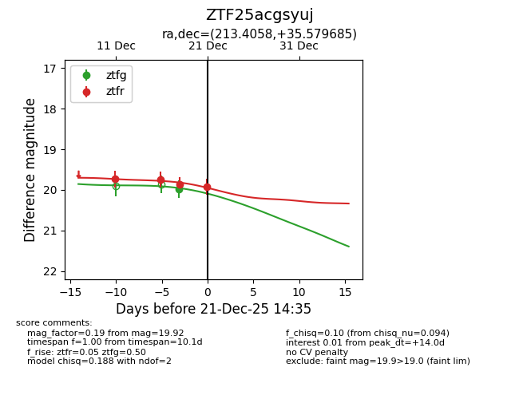
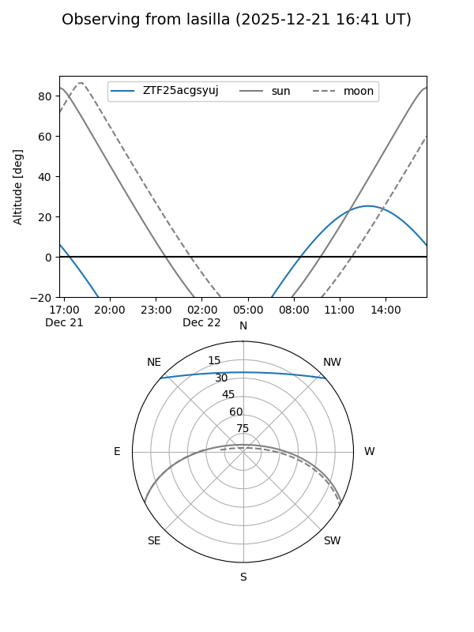
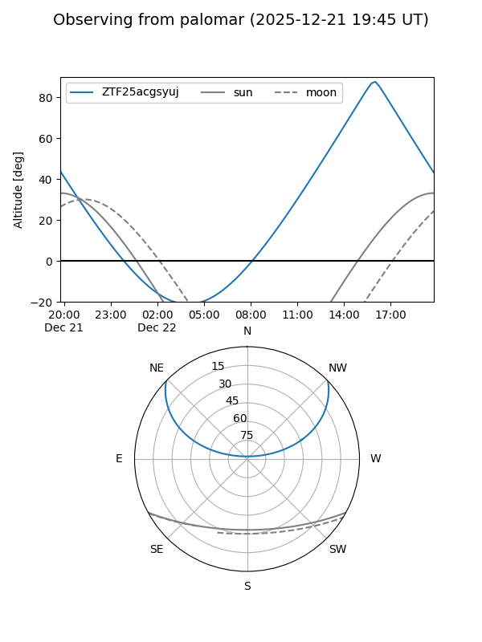
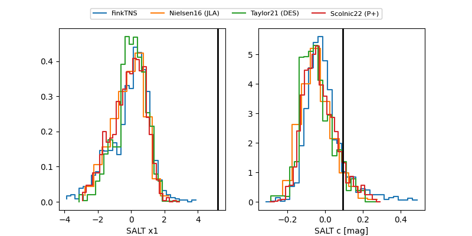

ZTF25acgsyuj
Target ZTF25acgsyuj at 2025-12-21 14:37
Aliases and brokers:
FINK: fink-portal.org/ZTF25acgsyuj
Lasair: lasair-ztf.lsst.ac.uk/objects/ZTF25acgsyuj
ALeRCE: alerce.online/object/ZTF25acgsyuj
alt names
ZTF25acgsyuj (ztf,fink_ztf)
Coordinates:
equatorial (ra, dec) = 213.4058,+35.57969
equatorial (HMS+DMS) = 14:13:37.40,+35:34:46.87
galactic (l, b) = (63.7917,+70.57830)
Flags:
Photometry:
last ztfg=19.98, ztfr=19.92
1 ztfg, 4 ztfr detections
Lightcurve

Visibility


Additional plots
